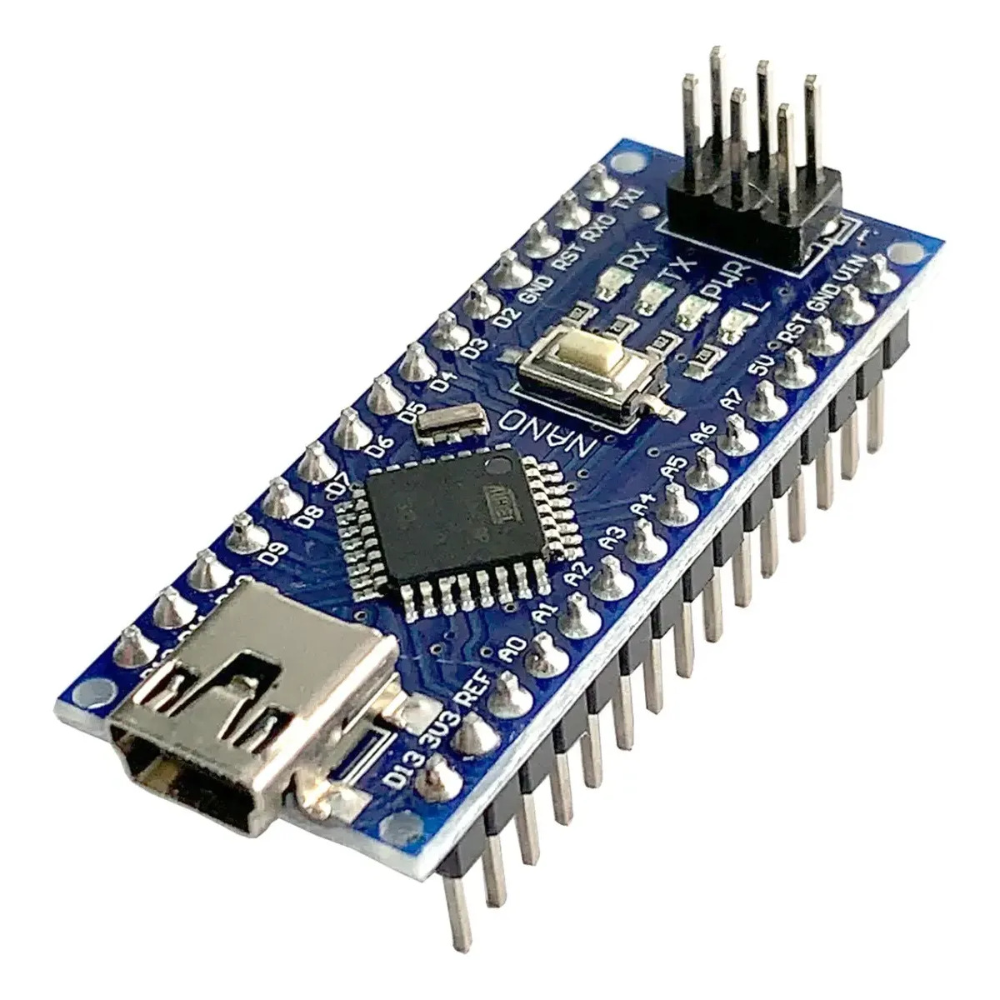
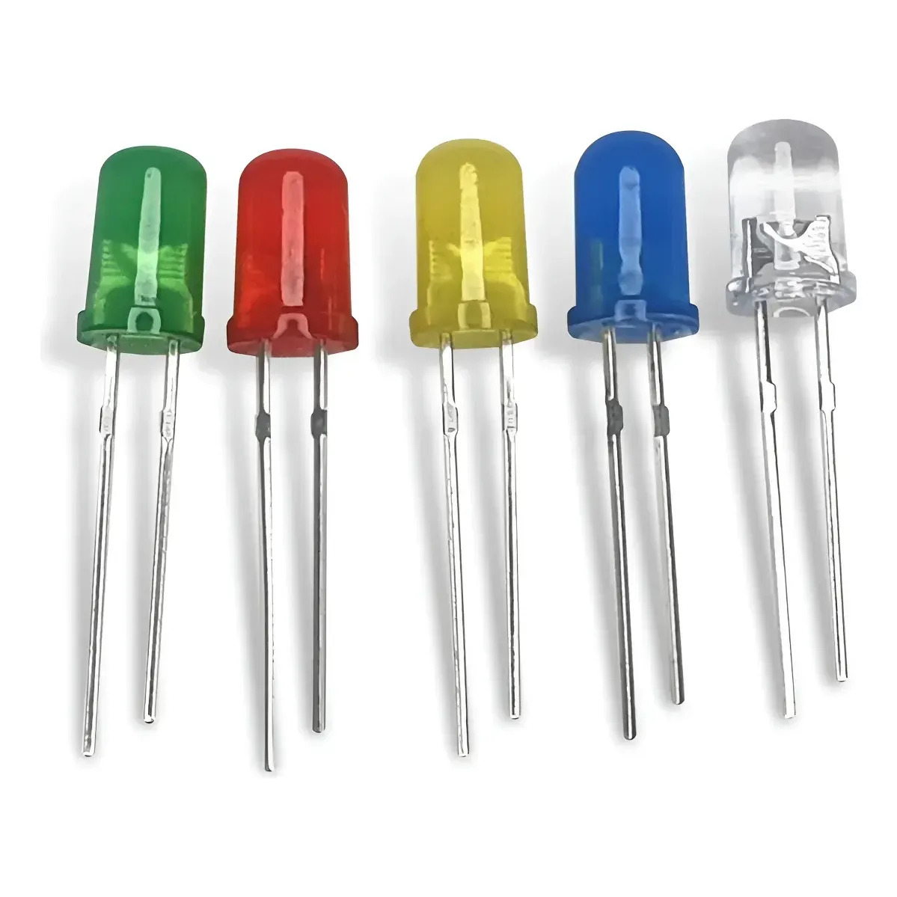
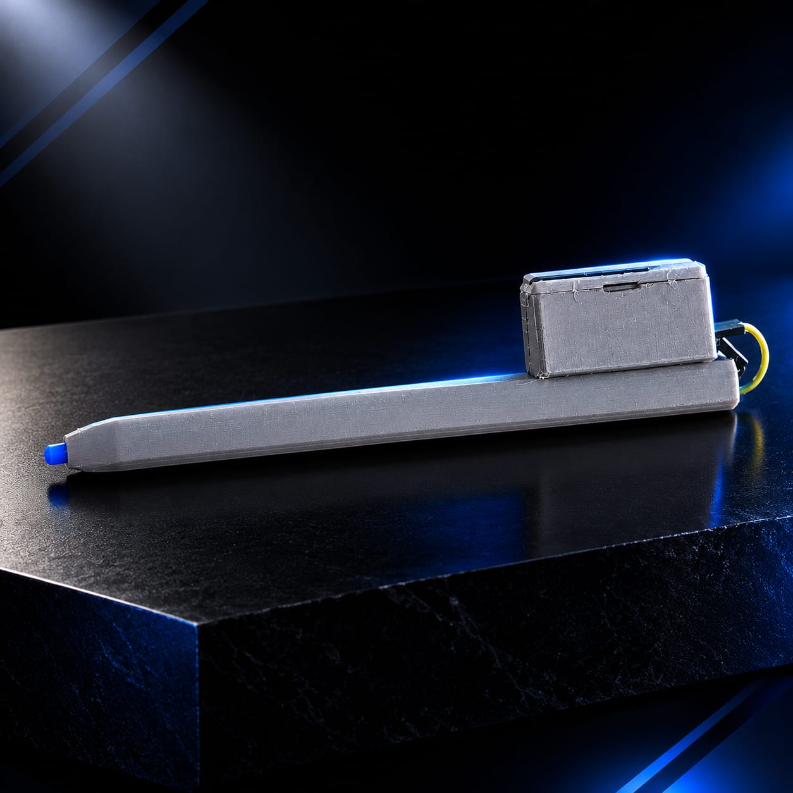
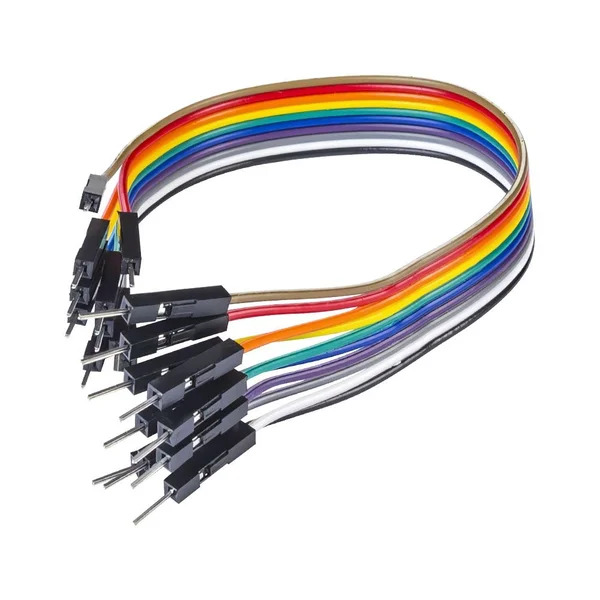
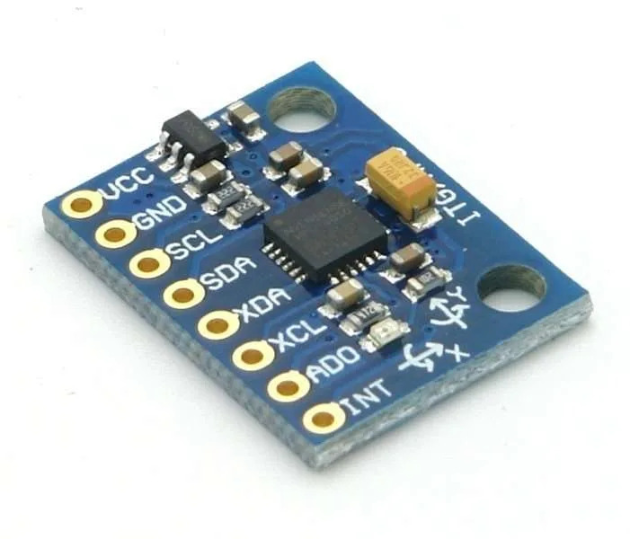

Explore a caneta em detalhes
Passe o mouse sobre a caneta para vê-la se desmontar e conheça cada peça que a compõe.
Componentes do SPV
Conheça as peças que compõem o Sistema de Posicionamento Visual (SPV) utilizado na caneta.

Responsável pelo controle do sistema e por fazer o LED piscar em uma frequência extremamente baixa, facilitando sua identificação pelo sistema de visão computacional.

Funciona como referência visual para a câmera. Ele pode ser substituído manualmente por LEDs de diferentes cores, como verde, azul, vermelho ou amarelo, permitindo adaptar o SPV a diferentes ambientes e condições de iluminação.

Serve para proteger e manter os componentes organizados em formato de caneta. No SPV 1.0, utilizamos uma carcaça impressa em 3D, mas ela pode ser substituída por PCC ou qualquer outro material capaz de acomodar e proteger os componentes.

Realizam as conexões elétricas entre o Arduino, o LED e os demais componentes, permitindo que o sistema funcione.

Pode ser utilizado para medir os movimentos e vibrações da caneta. Com esses dados, o sistema pode futuramente estimar o nível de tremor do usuário, auxiliando na análise dos movimentos durante a reabilitação.